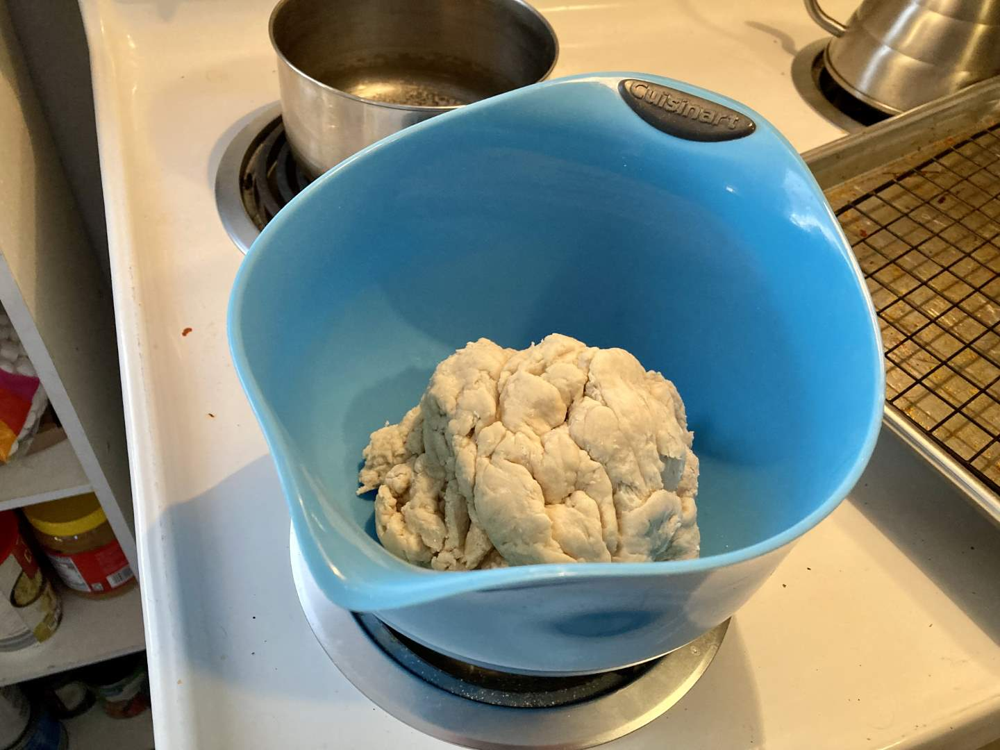
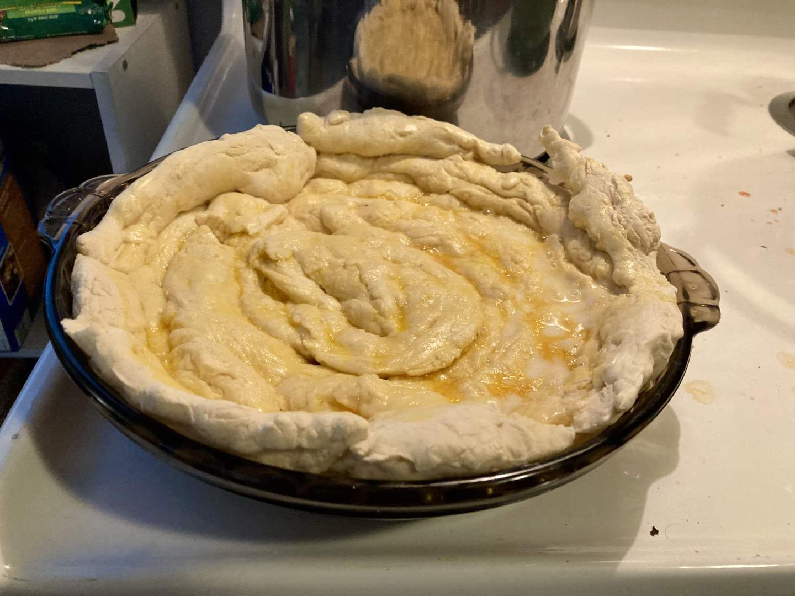
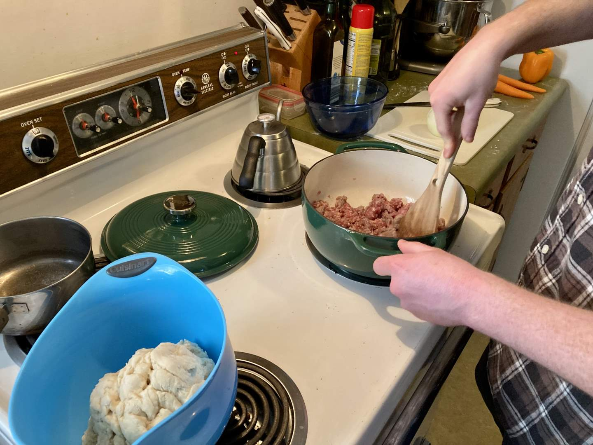
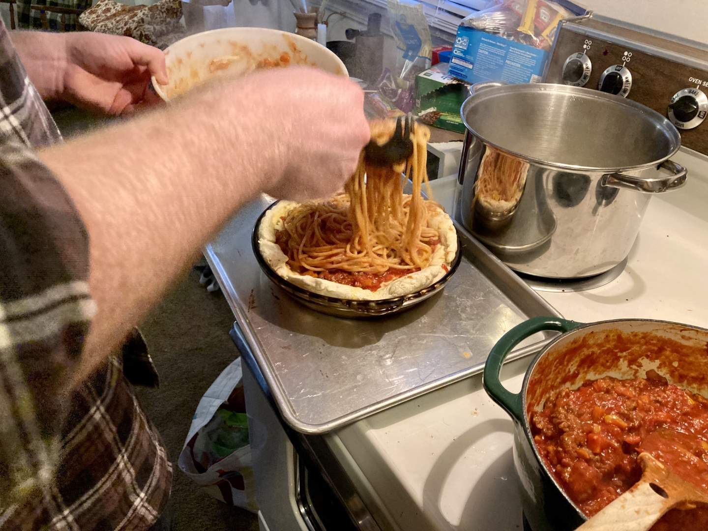
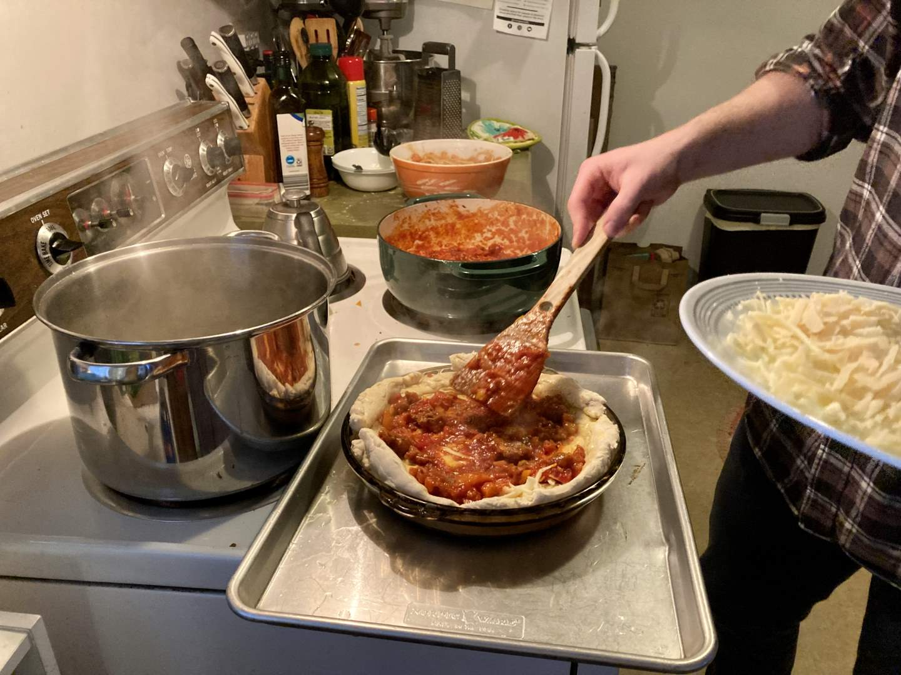
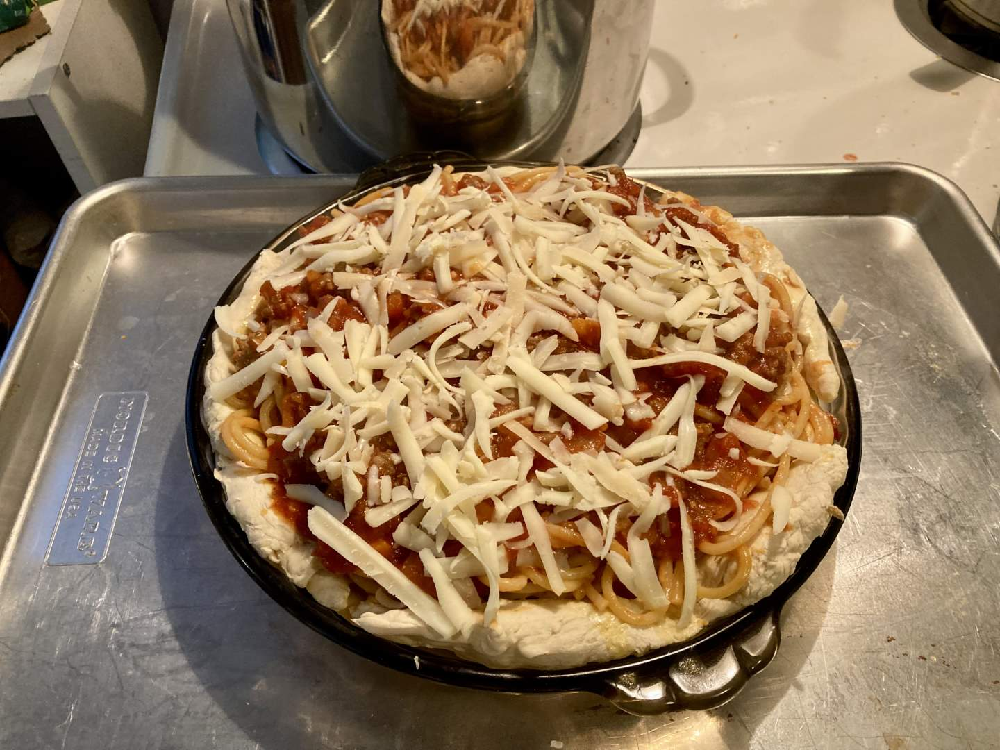

Pie 37: Spaghetti
2024-03-09Crust recipe from Taste of Home.
Taste:
Difficulty:
Vibes:
Suggested pairing: none--it's a whole meal
Some people will just throw anything into a pie dish and call it a pie. I would know--I’ve done it. Many recipes for spaghetti pie are just some eggy noodles baked in a dish. But a defined crust is what weeds out the wannabes. A spaghetti dinner already has a bread product commonly associated with it--breadsticks or garlic bread. Katie Beth and I decided to create a crust from breadstick dough and fill it with delicious spaghetti and meat sauce.
I whipped up a batch of breadstick dough according to a recipe I had used previously with great success. This time, however, I must have made an error as the dough was tough and difficult to work. With some effort, I rolled it into ropes, formed a spiral, and smooshed the dough into the bottom of a pie pan, then brushed it with egg and baked it until lightly browned.
 While the crust was baking, I prepared spaghetti noodles and the most important element of this pie: the sauce. I consider myself a sauce connoisseur after many years of consuming pasta and honing my sauce-making skills. Thankfully, we consistently stock onions, garlic, a can of crushed tomatoes, and tomato paste in our pantry--all that I needed to concoct a delicious marinara.

I stirred a good portion of sauce into the cooked noodles along with an egg so they were not drowning but pleasantly coated. I then poured the noodles into their breadstick basket, added some more sauce at the top, and garnished it with freshly grated parmesan cheese. It was time for the second bake.
  The pie held up surprisingly well without noodles escaping. The flavor of the spaghetti portion was excellent. KB thought the crust was not buttery or salty enough, but that’s coming from a woman who will eat a plain slice of bread with butter and salt on it as a “comfort food”. Overall, it was a cohesive pie that we would not be ashamed to serve to guests. It probably wasn’t better than eating breadsticks and pasta with red sauce separately, but it could be a fun cooking project to do with kids and has earned its place on the “strange but delicious” pie shelf.